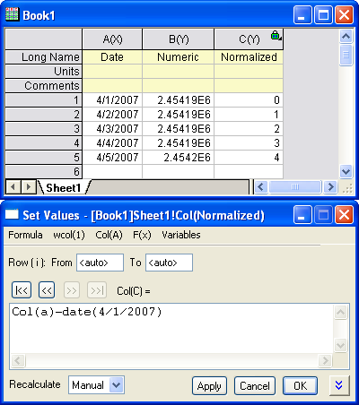

FAQ-259 Wie passe ich Datums- und Zeitdaten an?
Fit-Date-Time
Letztes Update: 26.09.2018
Versuchsdaten sind häufig Zeitfunktionen, die in kalendarischen Daten ausgedrückt werden können (z.B. 01.04.07). Für Berechnungen verwendet Origin intern die Julianische Tageszahl, die eine große positive Zahl wie 2,45419E6 ist. Für Untersuchungen von normaler Dauer besteht daher die interne Darstellung abhängiger Variablen hinsichtlich Julianischer Datumsangaben aus großen positiven Zahlen, die sich nur durch die letzte oder die letzten zwei signifikanten Ziffern unterscheiden. Komplexe Berechnungen, wie die Levenberg-Marquardt-Methode beim nichtlinearen Fit, konvergieren aufgrund geringer Zahlengenauigkeit wahrscheinlich nicht.
Sie können die unabhängigen Variablen X auf das früheste Datum normieren, um eine Kurvenanpassung durchzuführen. Eine neue unabhängige Variable X-prime wird erzeugt mit X-prime = X - Date(earliest date), wobei Date die Origin-Funktion zum Konvertieren des Kalenderdatums in ein Julianisches Datum ist. Sie können die Operation der Kurvenanpassung mit Hilfe dieser neuen X-Spalte und Ihrer Spalte der Y-Rohdaten durchführen. Beachten Sie, dass die Ergebnisse dann auf den normierten X-Werten basieren. Um die angepasste Kurve über den Rohdaten zu zeichnen, sollten Sie die Verschiebung wieder zur X-Spalte des Anpassungsarbeitsblatts hinzufügen. Außerdem sollte der Typ für die X-Spalte im Falle von Zeitreihendaten auf Datum gesetzt werden.
Das Beispiel unten zeigt, wie die Funktion Date() im Dialog Werte setzen verwendet wird, um den normierten Datumsdatensatz zu erstellen:
- 
Diese Normierungstechnik kann bei jeder Berechnung verwendet werden, bei der große positive Zahlen verwendet werden, die sich nur in der letzten oder den letzten beiden signifikanten Stellen unterscheiden.
 |
Beachten Sie, dass ab Version 2019 Origin ein "2018"-Datumssystem unterstützt, in dem der "Zeitpunkt Null" mit dem 1. Januar 2018 um 00:00 definiert wird. Ausgehend von aktuellen Daten verfügt dieses Datum-Zeit-System eine signifikant größere Präzision beim Umgang mit partiellen Tagen (Stunden, Minuten, Sekunden etc.).
|
Referenzen:
Schlüsselwörter: Datum, Zeit, Kurvenanpassung, Anpassung, Zeitreihen, Normierung